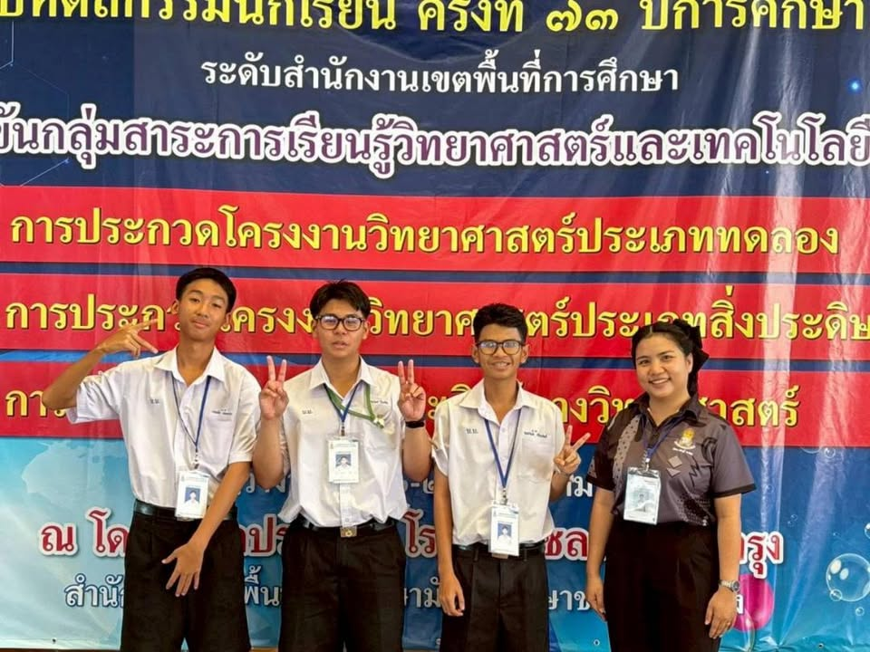
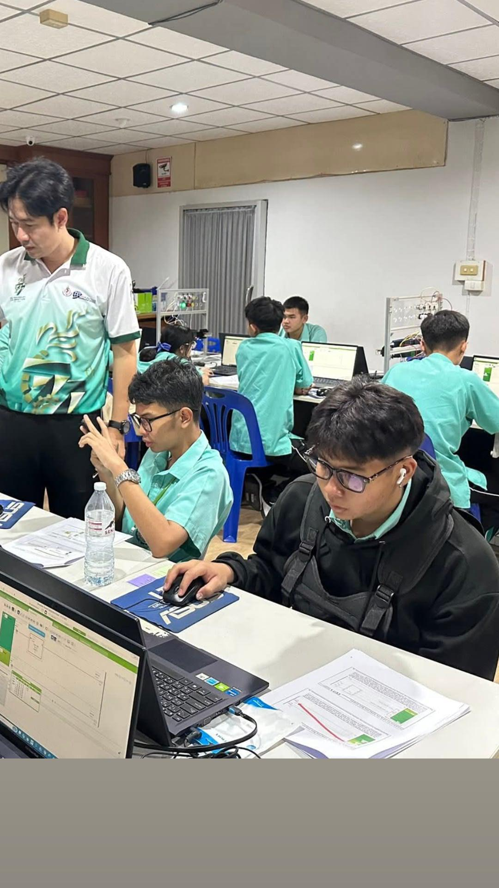
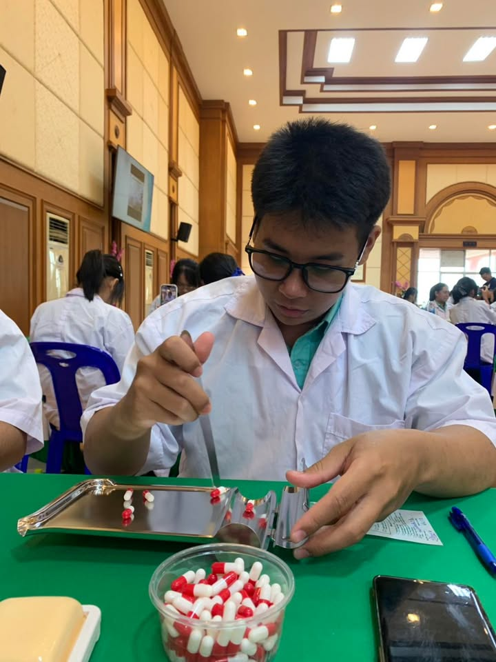
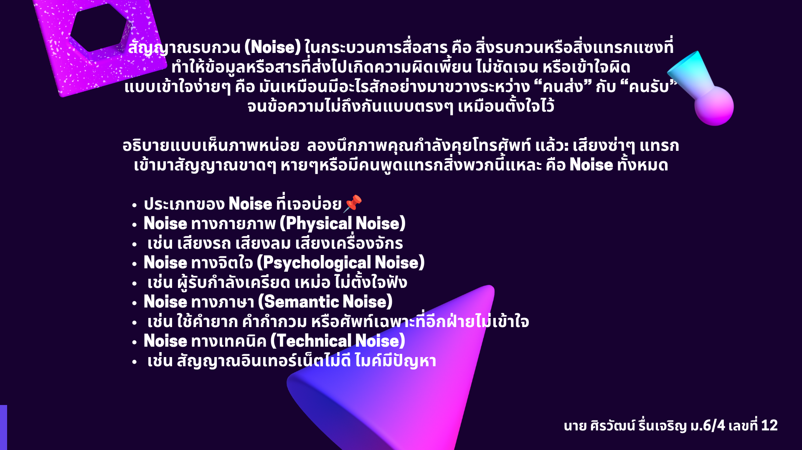
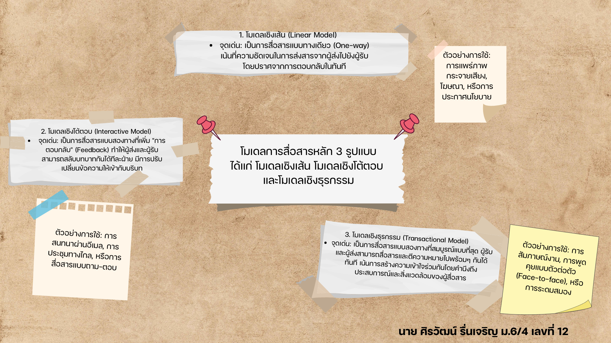
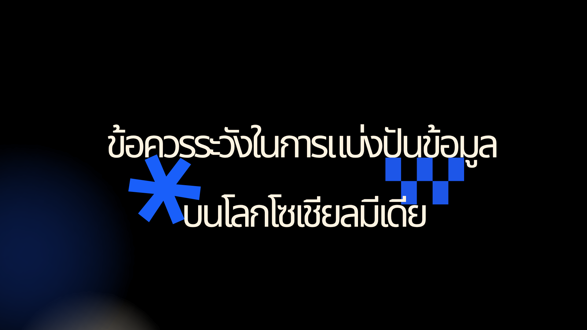

เบื้องหลังการพัฒนาและรายละเอียดฟังก์ชันทั้งหมด

* แข่งศิลปหัตถกรรม ครั้งที่ 73 โครงงานประดิษฐ์

* อบรมPLC โดยสถาบันเทคโนโลยีพระจอมเกล้าพระนครเหนือ ณ โรงเรียนบ้านบึง"อุตสาหกรรมนุเคราะห์"

* TheFutureClinician'sBootCamp ณ โรงเรียนบ้านบึง"อุตสาหกรรมนุเคราะห์"

* งานวิชาวิทยาการคำนวณ3 สัญญาณรบกวน (Noise) ในกระบวนการสื่อสาร

* งานวิชาวิทยาการคำนวณ3 โมเดลการสื่อสารหลัก 3 รูปแบบ ได้แก่ โมเดลเชิงเส้น โมเดลเชิงโต้ตอบ และโมเดลเชิงธุรกรรม

* งานวิชาวิทยาการคำนวณ3 ข้อควรระวังในการแบ่งปันข้อมูลบนโลกโซเชียลมีเดีย
โปรเจกต์นี้คือเว็บไซต์แฟ้มสะสมผลงานส่วนตัว ออกแบบด้วยสไตล์ Cyberpunk/Neon เน้นโทนสีมืดตัดด้วยแสงสะท้อนเรืองแสง พัฒนาขึ้นเพื่อจัดแสดงข้อมูลส่วนตัว ทักษะความสามารถ และรวบรวมลิงก์ช่องทางการติดต่อให้เข้าถึงได้ง่ายในที่เดียว